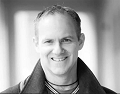

Ulf Lars Fredrik Bergström
Författare, operasångare, pol.mag, debattör, pressekreterare.
| Född: | 1972-06-03 Observatorieg 22, Gustav Vasa fs, Stockholms stad. [1] |
|---|
Noteringar
Ulf Lars Fredrik Bergström, född 1972, är en svensk författare, socialdemokrat, sedan 2019 ordförande i Republikanska Föreningen. Han har varit pressekreterare på finansdepartementet (2000-2001) för dåvarande finansminister Bosse Ringholm och planeringschef Jens Henriksson. Han har sedermera arbetat på en konsultfirma.[2] Han har sedan 2005 bl.a. varit talesman och kommunikationschef vid olika EU-myndigheter.[3][4][5][6][7]
Bergström gick på Adolf Fredriks Musikskola, Stockholms Musikgymnasium, samt studerade vid College of Europé likt bland annat Malin Persson-Giolito, Helle Thorning-Schmidt, Alex Stubb m.fl. Han har medverkat i ett antal inspelningar, bl.a. Rikskonserters inspelning av Singoalla, World Youth Choir "Live in Toronto" [8] 1995, samt verkat vid Operan och Folkoperan som operasångare. Han har vidare varit frilansskribent, och deltagit i samhällsdebatten i eget namn, som socialdemokratisk debattör med inriktning på främst EU-frågor,[9][10][11] mänskliga rättigheter[12] och politisk analys.[13][14][15][16][17][18][19][20][21] [22] Som sådan var han lokalt nominerad till Europaparlamentet[23] och Riksdagen 2013, men hamnade inte på valbar plats. 2018 medverkade han i stöduppropet av operamännen[24] för #MeToo #ViSjungerUt -operasångerskorna. I mars 2018 publicerade han sin debutroman thrillern Hatarna[25] (YouTube-klipp).[26] Hans boksigneringsturne har rapporterats om i medier bland annat P4 Gotland[27], P4 Dalarna[28], Norrländska Socialdemokraten[29] och Nynäshamnsposten.[30] Därtill har han som författare skrivit om monarki och hur det står i strid mot mänskliga rättigheter på Dagens Arena[31].
Referenser
2. ”Ringholms pressekreterare till Gullers Grupp” (på sv). Dagens Media.
www.dagensmedia.se/nyheter/ringholms-pressekreterare-till-gullers-grupp-6230379
3. ”"Operatörerna öppnar för monsterattacker"” (på sv-SE). Computer Sweden.
computersweden.idg.se/2.2683/1.502080/operatorerna-oppnar-for-monsterattacker
4. ”Arkiverade kopian”. Arkiverad från originalet den 14 augusti 2013. ^ ”EU 'must improve' cyber defences” (på en-GB). BBC News. 10 november 2010.
5. ”Stor europeisk IT-övning avslöjade säkerhetshål” (på sv). Sveriges Radio. 4 november 2010.
www.bbc.com/news/technology-11726671
6. ”Foreign terrorist fighters remain high on Eurojust agenda”. www.eurojust.europa.eu.
7. ”World Youth Choir, Frieder Bernius, Albert McNeil - World Youth Choir 1995 - Live in Toronto”. Discogs. Läst 29 augusti 2016.
8. ”Ställ Turkiet utanför | SvD” (på sv). SvD.se.
www.svd.se/stall-turkiet-utanfor
9. ”Ställ Turkiet utanför”.
www.svd.se/stall-turkiet-utanfor
10. ”Turkiet behöver bra alternativ till medlemskap”.
11. ”Ernman: Bildt måste hedra hjälten Anger | Debatt | Expressen” (på sv-SE).
www.expressen.se/debatt/ernman-bildt-maste-hedra-hjalten-anger/
12. ”Arkiverade kopian”. Arkiverad från originalet den 2 februari 2011.
13. ”Arkiverade kopian”. Arkiverad från originalet den 15 maj 2013.
14. ”Arkiverade kopian”. Arkiverad från originalet den 12 augusti 2013.
15. ””Döp om Arlanda till Raoul Wallenberg Airport” - DN.SE” (på sv-se). DN.SE. 10 juli 2013.
16. ”Arlandas namnbyte – en fråga för riksdagen | Nyheter | Expressen” (på sv-SE).
17. ”The Art of Public Diplomacy-the digital diplomat - Modern Diplomacy” (på en-US). moderndiplomacy.eu. Läst 19 juli 2018.
18. Raagard, Ingrid (11 november 2004). ”"Laßt uns die Königskinder befreien"”. DIE WELT.
19. ”Arkiverade kopian”. Arkiverad från originalet den 19 augusti 2011.
20. ”Kronprinzessin Victoria”. www.schwedisch-translator.de. .
21. ”Ernman: Bildt måste hedra hjälten Anger” (på sv). Expressen.
22. ”EU-parlamentet lockar operasångare | Dagens Opinion” (på sv). www.dagensopinion.se.
23. TT. ”Operamän stöttar kvinnliga kollegor” (på sv). SvD.se.
24. ”Hatarna, Thriller, Ulf Bergström” (på sv). www.ulfbergstrom.nu.
25. Thrillern Hatarna (12 februari 2018). ”Om Hatarna”.
www.youtube.com/watch?reload=9&v=r0DhhPvezdA
26. Radio, Sveriges. ”Han har skrivit boken om hat - P4 Gotland” (på sv). sverigesradio.se.
27. Radio, Sveriges. ”Med Maria och Frida - Morgon i P4 Dalarna” (på sv). sverigesradio.se.
28. ”Ambitiös thriller med god träffbild”. 5 april 2018.
29. ”TV: Därför sjunger thrillerförfattaren operaarior i Nynäshamns centrum” (på sv). nynashamnsposten.se. 5 oktober 2018.
30. ”Monarki bryter mot mänskliga rättigheter - Dagens Arena” (på sv-SE). Dagens Arena.
www.dagensarena.se/opinion/monarki-bryter-mot-manskliga-rattigheter/
Personhistoria
| Årtal | Ålder | Händelse |
|---|
| 1972 |
|
Födelse 1972-06-03 Observatorieg 22, Gustav Vasa fs, Stockholms stad [1] |
| 2004 |
32 år |
Fadern Bo Stefan Forsberg dör 2004-12-05 Observatorieg 22, Gustav Vasa fs, Stockholms stad [2] |
Dokument
Källor
| [1] | Mtl Sveriges befolkning 1975 |
| |
| | |
| [2] | man91, RFV 06, SDB7_05081410 |
| |
|
 |
Ulf Bergström
Foto: Bastian Parschau
|
| |
|  |
2018-04-05. Ulf Bergström
Bild: Anja Callius, NSD
|
|

{kind=link}